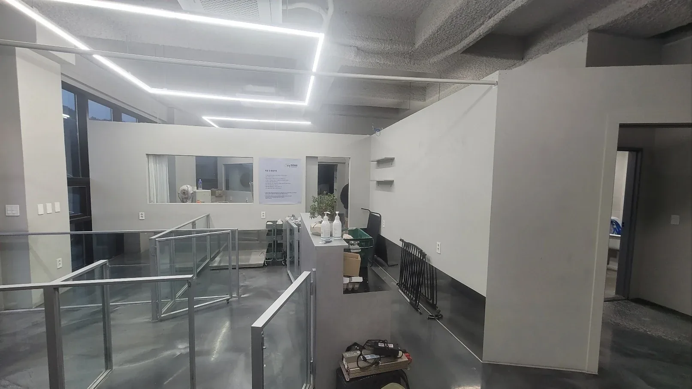
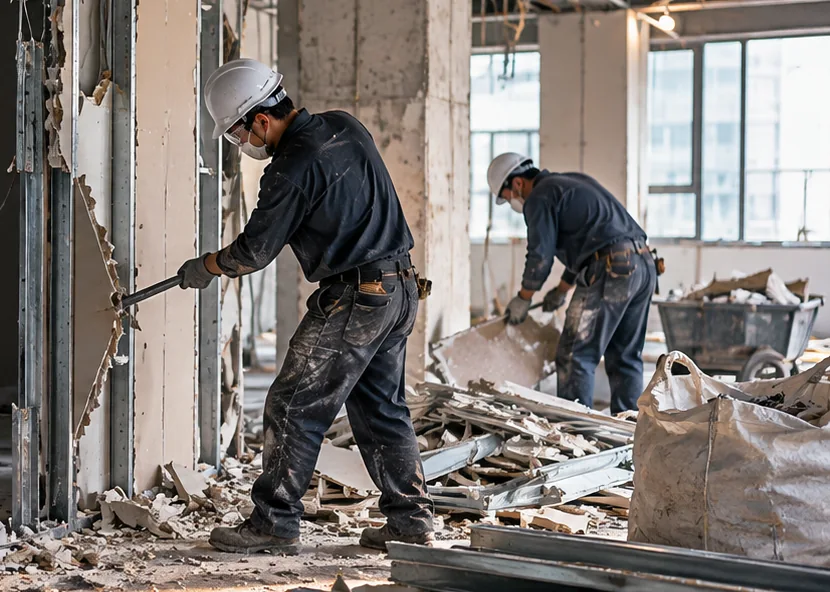
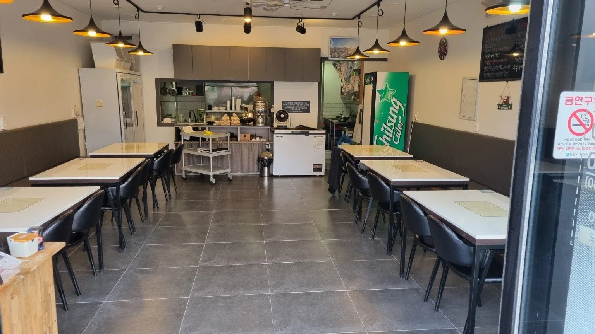
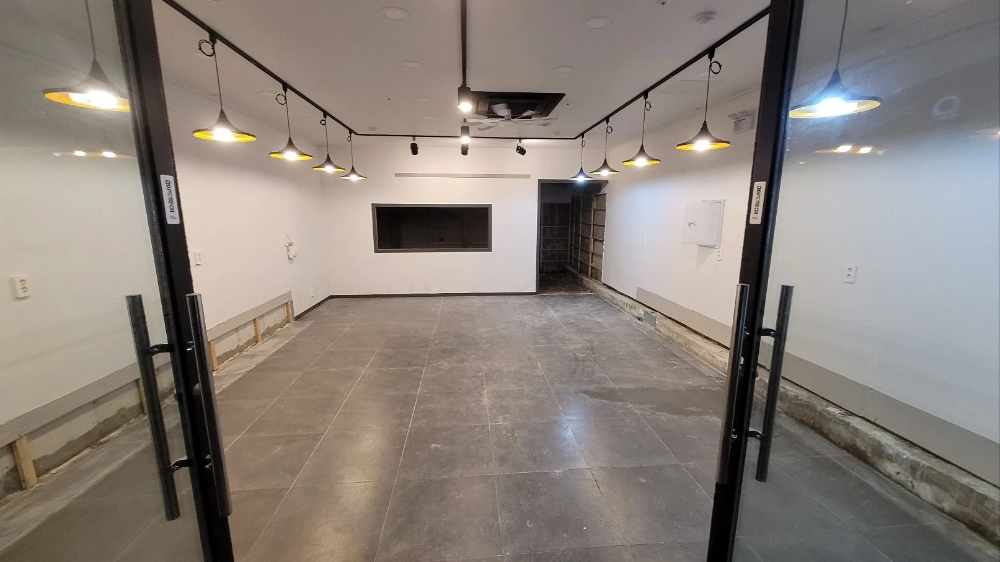
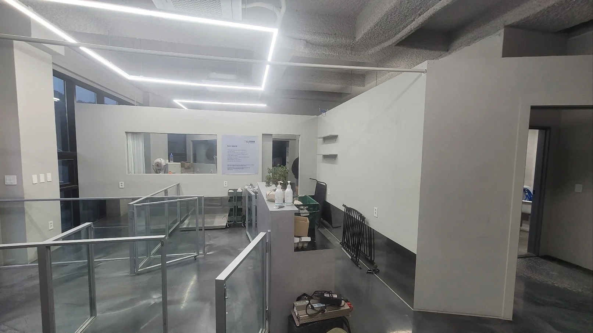
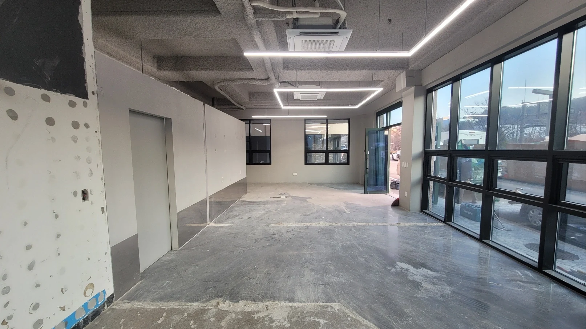

01
상가 내부철거 및 폐업철거
매장 카운터와 진열대, 가벽, 천장 마감재, 바닥재, 붙박이 가구 등 내부 시설물의 철거 범위를 확인합니다. 간판이나 출입구 주변 시설은 건물 규정과 임대차계약에 따라 별도로 협의할 수 있습니다.
서울 도봉구 · 폐업철거 및 원상복구 상담
도봉구에서 폐업을 준비하거나 상가를 반환해야 하나요? 창동·방학동·쌍문동·도봉동 점포의 내부철거부터 폐기물 반출, 원상복구까지 필요한 작업을 확인해 보세요. 현장 구조와 임대차계약의 반환 조건을 살펴 견적과 일정을 상담하실 수 있습니다.
주요 상담 서비스
점포 위치, 대략적인 면적, 현재 사진, 희망 완료일을 준비하시면 상담에 도움이 됩니다.
01 / 철거 서비스
같은 크기의 매장이라도 내부 시설과 원상복구 조건에 따라 공사 범위가 달라집니다. 천장·바닥·가벽·집기 중 무엇을 철거하고 무엇을 남겨야 하는지 먼저 확인합니다.
매장 카운터와 진열대, 가벽, 천장 마감재, 바닥재, 붙박이 가구 등 내부 시설물의 철거 범위를 확인합니다. 간판이나 출입구 주변 시설은 건물 규정과 임대차계약에 따라 별도로 협의할 수 있습니다.

음식점은 조리대·후드·덕트, 학원은 강의실 칸막이·고정 가구, 사무실은 파티션·인테리어 설비 등 업종별로 철거 대상이 다릅니다. 냉난방기와 전기·가스 설비는 안전 조치나 별도 전문 작업이 필요한지도 확인해야 합니다.

목재, 석고보드, 금속, 유리, 폐집기 등은 종류와 양에 따라 반출 방식과 처리비가 달라집니다. 견적을 받을 때 폐기물 운반·처리 비용이 포함되는지 확인해 보세요.
02 / 지역별 현장 조건
도봉구에는 역세권 상가부터 주택가 소규모 점포, 여러 업체가 입점한 상가건물까지 다양한 영업 공간이 있습니다. 점포 면적이 같더라도 층수, 출입구, 폐기물 반출 동선에 따라 작업 방식과 비용이 달라질 수 있습니다.
창동역·쌍문역 인근처럼 입점 업체가 많은 건물에서는 엘리베이터 이용 시간과 소음 규정을 확인하는 것이 좋습니다. 방학동·도봉동의 소규모 점포도 차량 진입 여부와 폐기물 적재 공간에 따라 반출 계획이 달라질 수 있습니다.
사업장 위치와 층수, 작업 가능 시간, 반출 동선을 알려주시면 현장에 맞는 철거 준비사항을 상담하실 수 있습니다.
03 / 상가 원상복구
상가 원상복구가 내부 시설을 전부 철거한다는 뜻은 아닙니다. 임대차계약서의 원상복구 조항, 입점 당시 상태, 임대인과 합의한 반환 기준에 따라 남겨야 할 시설이 있을 수 있습니다.
기존 바닥을 유지할지, 추가 설치한 천장을 철거할지, 배선·배관을 어디까지 정리할지에 따라 공사비도 달라집니다.
철거할 부분과 그대로 둘 부분을 구분한 뒤 임대차 종료일에 맞춰 공사 범위를 검토하세요. 계약서와 입점 당시 사진이 있으면 반환 조건을 확인하는 데 도움이 됩니다.
04 / 견적 안내
도봉구 철거 비용은 평수만으로 정해지지 않습니다. 철거할 시설의 종류, 폐기물 양, 건물 출입 조건, 희망 완료일에 따라 견적이 달라집니다.
철거비, 폐기물 운반·처리비, 필요한 보수 작업이 각각 포함되는지 확인하면 추가 비용을 줄이는 데 도움이 됩니다. 현장에 따라 별도 비용이 발생할 수 있는 항목도 미리 문의하세요.
05 / 진행 과정
현재 점포 상태와 반환 조건을 확인한 뒤 철거 범위와 견적, 작업 일정을 협의합니다. 실제 진행 방식은 현장 여건에 따라 달라질 수 있습니다.
점포 위치와 면적, 업종, 남아 있는 시설, 희망 작업일을 알려주세요. 임대차 종료일이 정해져 있다면 함께 전달하는 것이 좋습니다.
현재 시설과 반환 조건을 바탕으로 철거할 부분, 유지할 시설, 폐기물 처리 범위를 구분합니다. 필요한 경우 현장 확인 방법을 정합니다.
철거 범위와 건물 규정, 작업 가능한 시간을 바탕으로 견적과 공사 일정을 협의합니다. 견적서의 포함·제외 항목도 이때 확인하세요.
합의한 범위에 따라 철거와 폐기물 반출, 필요한 마무리 작업을 진행합니다. 완료 후에는 원상복구 기준에 맞게 처리됐는지 확인합니다.
06 / 누적 실적
상가와 점포 등 다양한 상업시설에서 쌓아온 전체 누적 실적입니다.
위 수치는 도봉구에 한정되지 않은 전체 누적 실적입니다. 공사 건수와 정부지원금 상담 건수는 서로 다른 항목이며, 지원금 수령 실적이나 지급 보장을 의미하지 않습니다.
07 / 실제 시공 사례
실제 상가 철거 현장 두 곳의 시공 전후 사진입니다. 각 현장의 기존 시설과 철거 후 공간을 나란히 비교해 보세요.




08 / 점포철거비 지원
폐업을 준비하고 있다면 소상공인 점포철거비 지원사업의 대상 여부도 확인해 보세요. 지원 대상, 신청 기간, 인정되는 비용과 제출 서류는 공고에 따라 달라집니다.
지원사업 신청과 심사는 해당 기관이 진행하며, 철거 견적을 받았다고 해서 지원금 지급이 확정되는 것은 아닙니다. 계약과 공사 진행 전 최신 공식 공고를 확인하는 것이 좋습니다.
09 / 자주 묻는 질문
공사 범위와 일정, 점포철거비 지원에 대해 자주 묻는 내용을 정리했습니다.
네. 소규모 상가의 내부철거와 특정 시설물 철거도 상담하실 수 있습니다. 다만 실제 작업 가능 범위와 비용은 철거 대상, 작업 환경 등을 검토한 뒤 확인할 수 있습니다.
폐업 예정 단계에서도 상담을 신청하실 수 있습니다. 현재 점포 사진과 철거 예정 시설, 임대차 종료일을 알려주시면 사전에 검토해야 할 내용을 안내해 드립니다.
모든 시설을 반드시 철거해야 하는 것은 아닙니다. 계약서의 반환 조건과 임대인과 협의한 내용에 따라 유지할 수 있는 시설도 있습니다. 에어컨·간판은 설치 방식에 따라 별도 작업이 필요할 수 있습니다.
철거 견적과 함께 점포철거비 지원사업에 필요한 확인사항을 상담하실 수 있습니다. 대상, 신청 기간, 지원 범위, 제출 서류는 사업별 공식 공고를 확인해야 합니다. 신청·심사와 지급 결정은 해당 기관에서 진행합니다.
가능한 작업 일정은 점포 면적과 설비, 철거 범위, 건물 작업 규정, 현장 여건에 따라 달라집니다. 희망 완료일과 임대차 종료일을 상담 시 알려주시면 일정 협의에 필요한 사항을 확인하실 수 있습니다.
상담 안내
창동·쌍문동·방학동·도봉동에서 상가 폐업이나 점포 반환을 준비하고 계신가요? 철거 대상과 폐기물 처리, 원상복구 조건을 확인하고 현장에 맞는 공사 범위와 견적을 상담해 보세요.
점포 사진과 대략적인 면적, 희망 작업 날짜를 알려주시면 보다 구체적인 상담에 도움이 됩니다.
철거할 시설과 희망 완료일을 알려주시면 견적 상담에 도움이 됩니다.
철거 비용과 원상복구 조건에 관한 추가 정보는 도봉구 폐업철거·원상복구 상세 안내에서 확인하실 수 있습니다.